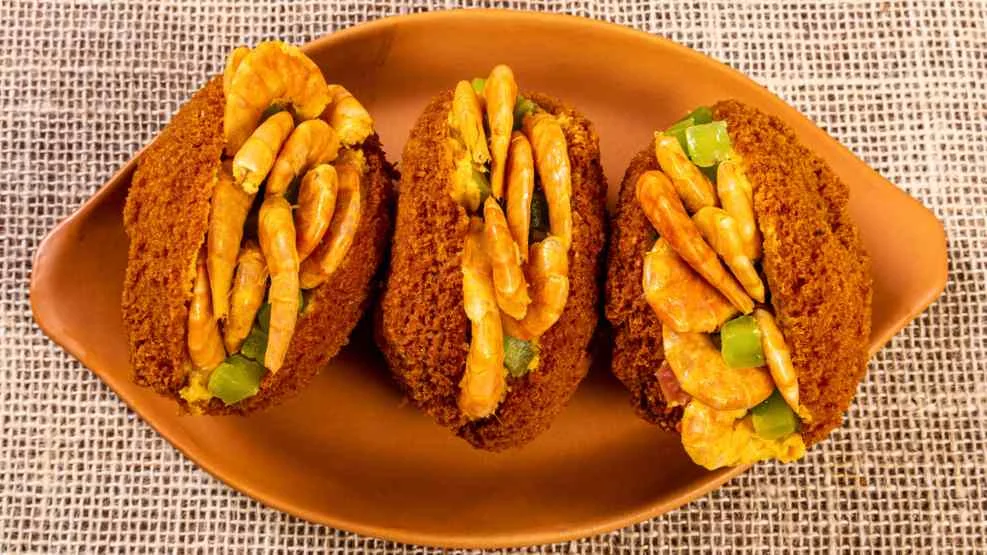
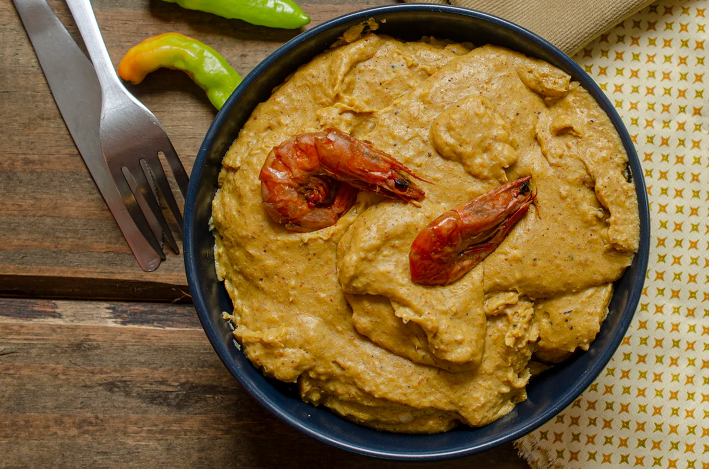

Acarajé
É praticamente um patrimônio cultural! Feito de massa de feijão-fradinho que é frita no dendê.

A comida baiana é um verdadeiro festival sensorial. Do charme boêmio do Rio Vermelho ao coração histórico do Pelourinho, Salvador é um verdadeiro banquete a céu aberto. A cidade é repleta de esquinas perfumadas pelo azeite de dendê das tradicionais baianas de acarajé, patrimônio que alimenta a alma. Além de abrigar restaurantes incríveis que misturam a culinária ancestral com a alta gastronomia contemporânea. Seja de frente para o mar da Barra ou nas ladeiras históricas, comer em Salvador é vivenciar uma experiência cultural inesquecível em cada esquina.

É praticamente um patrimônio cultural! Feito de massa de feijão-fradinho que é frita no dendê.

É a tradução da identidade da Bahia em forma de cozido. Ela une perfeitamente peixe fresco, leite de coco, coentro e azeite de dendê. Servida na tradicional panela de barro, representa o calor e a ancestralidade do povo soteropolitano.

Irmão de massa do acarajé, o abará tem profunda importância histórica e espiritual. O seu grande diferencial está no preparo: a massa de feijão-fradinho com dendê não é frita. É embrulhada na folha de bananeira e cozida no vapor, ficando macia e muito saborosa.

É um dos acompanhamentos mais sagrados da culinária baiana. Trata-se de um creme super aveludado feito à base de pão, leite de coco, amendoim, castanha-de-caju, camarão seco e azeite de dendê, trazendo um equilíbrio perfeito de sabores que derrete na boca.

Um dos acompanhamentos mais tradicionais da culinária baiana e possui forte ligação religiosa. Feito à base de quiabo picado, camarão seco, amendoim, castanhas e azeite de dendê, o prato tem textura única e é presença marcante nas famosas festas de São Cosme e Damião.

Doce tradicional feito à base de coco ralado e açúcar, podendo ser branca, queimada ou cremosa.
Não perca nenhuma novidade da capital mais saborosa do Brasil! Inscreva-se para receber em primeira mão o calendário dos melhores festivais de culinária, a abertura dos novos restaurantes badalados em Salvador e roteiros exclusivos para você turistar pelo melhor da nossa gastronomia.